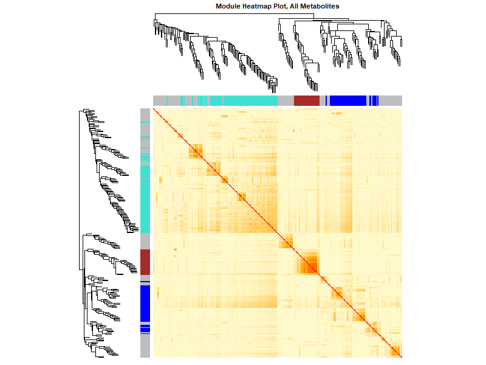
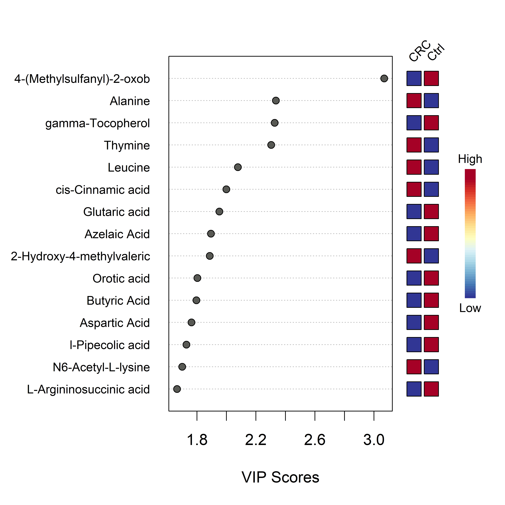
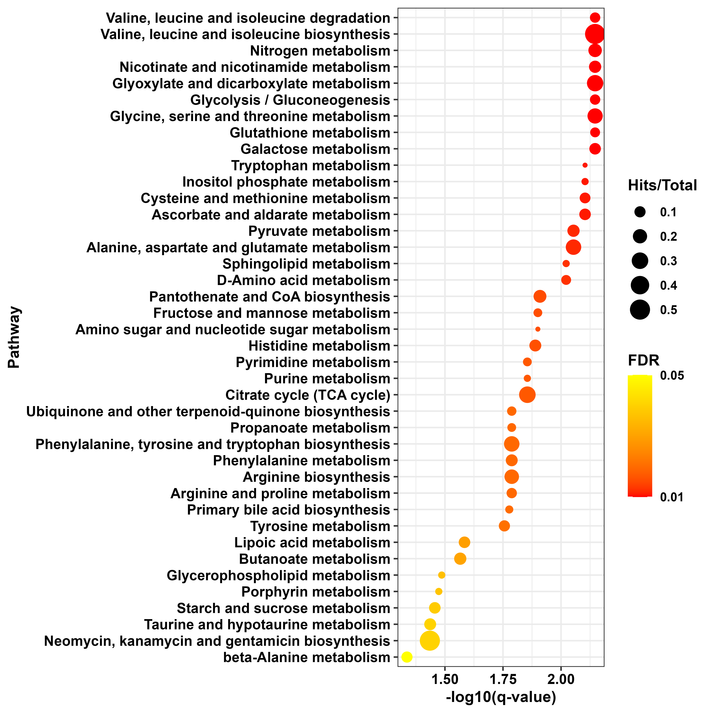
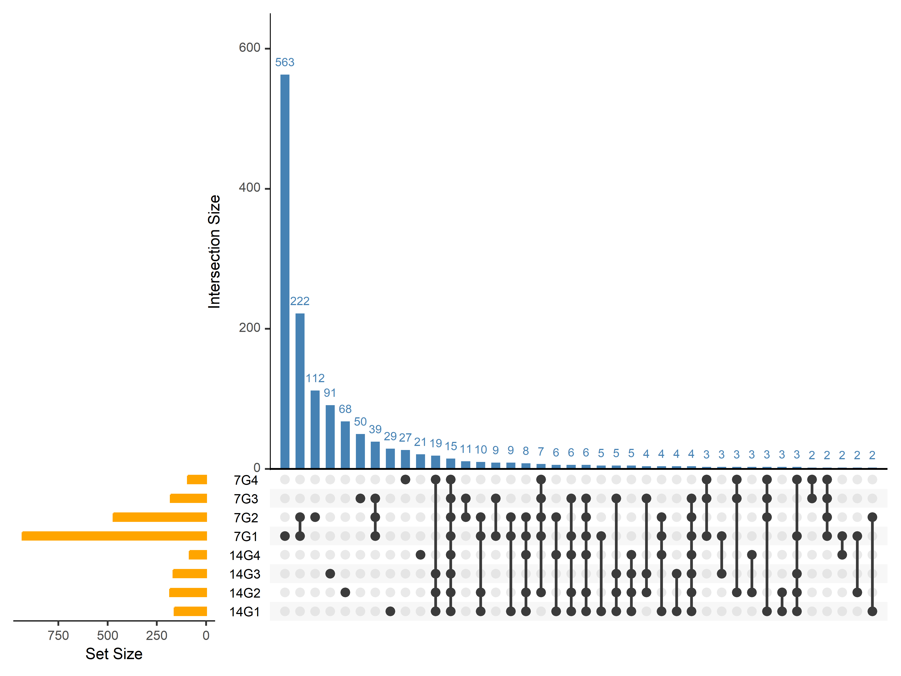
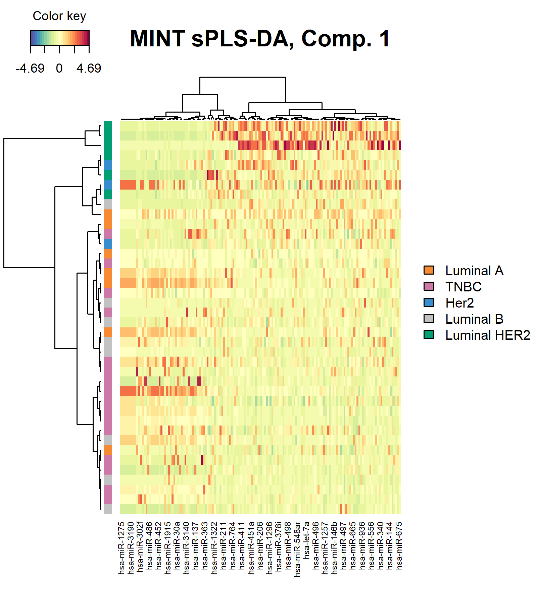
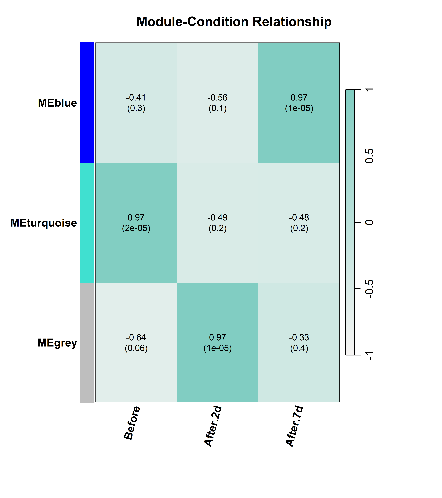
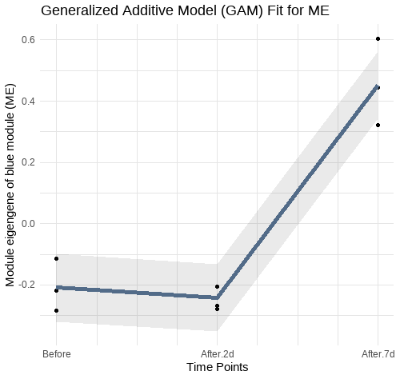

Research Projects
Metabolomic Analysis of Gut Metabolites in Colorectal Cancer Patients (CRC)
Objectives:
Identify metabolite signatures and network-level metabolic disruptions distinguishing CRC patients from healthy controls.
Hurdles:
Low data coverage and a limited number of differentially expressed metabolites, making it difficult to identify robust discriminative signatures.
Rationale:
Metabolic alterations occur in coordinated patterns. By capturing these patterns through co-expressed modules correlated with disease status and exploring knowledge-based metabolite–metabolite interactions within these modules, it is possible to identify biomarkers and key metabolic mediators in CRC.
Framework:
- Implemented an end-to-end pipeline, including raw data preprocessing, PQN normalization, differential expression analysis, WGCNA for module discovery, and eigengene differentiation for CRC-specific modules.
- Applied intramodular connectivity to identify hub metabolites.
- Applied PCA/PLS-DA for dimensionality reduction and feature prioritization.
Outcome:
Defined metabolite modules linked to CRC phenotypes, highlighted hub metabolites as candidate biomarkers, and revealed dysregulated metabolic networks and pathways.
TOM Heatmap

PLS-DA VIP Features

Enrichment Analysis

Find More
Integrative Multi-Omics Profiling of Rhabdomyosarcoma Subtypes Reveals Distinct Molecular Pathways and Biomarker Signatures
Objectives:
Uncover subtype-specific molecular signatures and key drivers of RMS using integrative proteomics and metabolomics.
Hurdles:
High heterogeneity across subtypes and difficulty distinguishing biomarkers specific to each subtype.
Rationale:
Rather than focusing on individual genes, identifying altered networks and their central regulators provides a more comprehensive understanding of subtype-specific etiologies and therapeutic targets.
Framework:
- Applied WGCNA to identify co-expressed modules and tested eigengene differentiation using Wilcoxon statistics.
- Constructed PPI networks integrating hub and differentially expressed proteins, then applied centrality analysis to identify key drivers.
Outcome:
Characterized subtype-specific molecular landscapes in RMS, pinpointed central regulators, and mapped key altered pathways.
Module-phenotype Heatmap

Module Eigengene Barplot

Find More
CrosstalkX: A Mutual Information–Based Framework for Pathway Interaction Inference
Objectives:
Develop a computational tool to detect nonlinear dependencies and interactions among signaling pathways and transcription factors (TFs).
Hurdles:
Traditional correlation-based approaches overlook nonlinear associations; scalable and robust statistical modeling was required.
Rationale:
Pathways function through coordinated interactions rather than isolated activity. We applied a mutual information algorithm between pathway gene sets with prior PPI constraints, inferring edges only when significant mutual information was detected between first-degree interacting genes. Mutual information was then inferred at the pathway level, with randomization to assess significance. Significant interactions reveal functional interplay underlying complex diseases.
Framework:
- Developed a mutual information–based inference algorithm in R to construct pathway–pathway and pathway–TF interaction networks.
- Core pathways and TFs were prioritized by interaction degree.
Outcome:
Developed CrosstalkX, an R package for mutual information–based pathway interaction analysis, enabling the detection of nonlinear dependencies between pathway gene sets. The tool identifies highly interacting signaling pathways and prioritizes core pathways with high interaction degrees, revealing key functional Interplay that potentially coordinate critical biological processes.
Enrichment Plot

Crosstalk Plot

TF-target Plot

Find More
A Multi-Omics and Mutual Information Framework to Decode Pathway Crosstalk and Therapeutic Vulnerabilities in TNBC
Objectives:
Prioritize therapeutic targets and repurpose drugs for TNBC by integrating multi-omics data and pathway crosstalk analysis.
Hurdles:
Transcriptome data were highly noisy, with enrichment analysis yielding nonspecific results. Integration across heterogeneous omics layers made it difficult to distinguish meaningful pathway interactions from background noise.
Rationale:
Multi-omics integration via MOFA, with ARD-induced sparsity, reduces noise by setting weights of non-contributing genes close to zero. TF-target inference applied to MOFA top features, combined with univariate linear modeling (decoupleR), identifies active TFs. Centrality algorithms prioritize key targets, while DepMap essentiality scores validate lethality. Mutual information–based crosstalk analysis could reveal core interacting pathways. Finally, Macau-based sensitivity analysis links pathway states to drug responsiveness, exposing actionable vulnerabilities.
Framework:
- Retrieved six-layer TCGA data, applied MOFA for latent factor inference, and extracted top features.
- Inferred TF activity with decoupleR, applied centrality analysis, and introduced mutual information–based crosstalk.
- Linked central genes and pathways to candidate drugs via CMAP, applied network synergy prediction.
- Validated essential targets with DepMap, and incorporated survival analysis.
- Implemented Macau for target sensitivity prediction.
Outcome:
Identified core interacting pathways, prioritized therapeutic targets, and refined drug combinations aligned with TNBC molecular states.
Crosstalk Plot

Chord Plot

Heatmap Plot

Find More
Enhanced Bone Regeneration in Rat Gingival Mesenchymal Stem Cells
Objectives:
Characterize molecular programs and cellular contributions driving bone regeneration under diverse interventions.
Hurdles:
Multi-layer temporal datasets across experimental settings with three time-point measurements each, requiring disentanglement of heterogeneous cell-type contributions.
Rationale:
Factor analysis of spatio-temporal profiles can uncover latent factors that covary across time points and explain differentiation trajectories. Understanding these regulatory programs will optimize scaffold- and laser-based regenerative therapies.
Framework:
- Applied MEFISTO for time-resolved integration of protein expression data.
- Inferred TF activity with decoupleR, explored pathway crosstalk.
- Applied CIBERSORT deconvolution against a dental cell atlas to map protein changes to cell types.
Outcome:
Revealed time-coordinated regulatory programs, identified TF–pathway axes, and mapped cell-type contributions enhancing regenerative efficacy.
Upset Plot

Latent Factor1 Plot

Stacked Barplot for SC Deconvolution

TF-Pathway Crosstalk Plot

Find More
Integrative Analysis of Extracellular Vesicle miRNAs Reveals Molecular Signatures and Regulatory Networks in Breast Cancer Subtypes
Objectives:
Discover extracellular vesicle miRNA signatures and regulatory networks distinguishing breast cancer subtypes.
Hurdles:
Batch variability across multiple datasets and low coverage for some studies and missing metadata for others.
Rationale:
Batch effect correction using limma voom could help git rid of wanted source of variability. MINT-sPLSDA could offer a robust way of integrating data through harmonizing data using z scoring and then allow us to choose the best number of components to integrate the datasets that allow better classification between groups. miRNA does not work individually usually more than miRNA targeting the same gene change together and thus we could prioritize differentially expressed miRNA for each subtypes by setting the condition that at least 3 mirna targeting the same genes should be differentially expressed to infer translational molecular alteration.
Framework:
- Preprocessed and batch-corrected datasets.
- Applied MINT-sPLS-DA for multivariate integration and subtype classification.
- Constructed miRNA–target networks requiring triply supported interactions, and performed enrichment analyses.
Outcome:
Identified discriminative miRNA panels for subtype classification, uncovered key pathways under vesicle-miRNA regulation, and proposed subtype-specific molecular biomarkers and potential molecularly altered networks.
Heatmap for BC vs Ctrl

ROC Curve for BC vs Ctrl

Heatmap for BC Subtypes

ROC Curve for BC Subtypes

Find More
Proteomic Profiling of Pancreatic Cancer Patients: Time Series Study Before and After Whipple Surgery
Objectives:
Track temporal protein dynamics and functional reorganization in pancreatic cancer patients undergoing Whipple surgery without developing diabetic complications.
Hurdles:
Identifying signatures correlated with long-term glycemic stability rather than short-term post-surgical responses.
Rationale:
Surgery induces systemic proteomic changes. Mapping these dynamics reveals stress responses, repair mechanisms, and processes contributing to stable glycemic control.
Framework:
Applied WGCNA to detect co-expression modules and correlated eigengenes with time metadata. For the module associated with recovery (time point 3), modeled temporal changes using GAMs with patient-specific intercepts. Identified hub proteins (datKME > 0.85), integrated with STRING-based PPI networks, applied Louvain clustering, and performed enrichment analysis.
Outcome:
Highlighted dynamic proteomic modules, identified central hub proteins in recovery, and revealed pathway modules with coordinated activity and crosstalk relevant to post-surgical adaptation.
Module-phenotype Heatmap

GAM Plot

PPI network & Louvain Detected Communities

Enriched Pathways in Blue Module